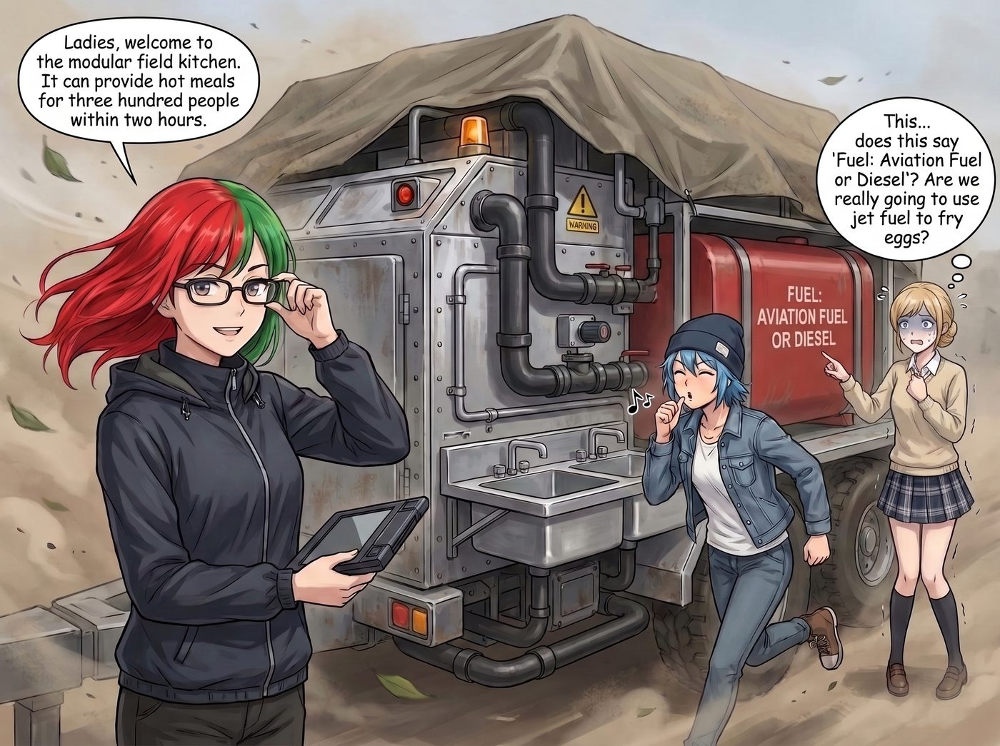
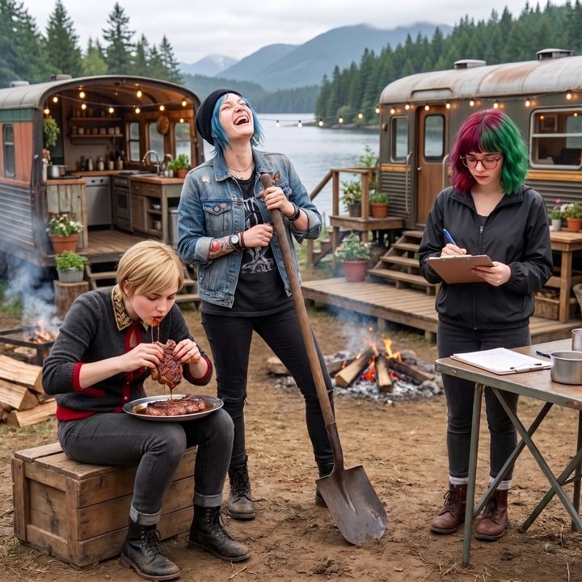

黑化炙烤


第二天清晨六點，奧林匹亞半島的寧靜被一陣震耳欲聾的旋翼轟鳴聲徹底粉碎。
狂風將二號車廂周圍的樹枝吹得瘋狂搖晃，一架運輸直升機懸停在營地上空。在四個女孩裹著毯子、目瞪口呆的注視下，直升機底部的纜繩精準地降下了一個巨大的、覆蓋著防水帆布的拖車底盤，隨後又扔下三個巨大的保溫箱，接著一個瀟灑的拉升，消失在雨雲中。
一、模組化野戰廚房
Lily 穿著整齊的防風外套，手裡拿著一個電子簽收板，滿意地看著那個猶如裝甲車般龐大的金屬怪物。
「女士們，」Lily 轉過身，推了推被狂風吹歪的眼鏡，「歡迎來到模組化野戰廚房。它能在兩小時內為三百人提供熱食。」
Chloe 興奮地吹了個口哨，第一個衝上前掀開了防水布。
然而，當這套廚房的真面目展現在眾人面前時，昨天晚上還對牛排和鮭魚充滿美好幻想的 Kate，臉色瞬間變得慘白。
這根本不是什麼廚房。這是一個由粗糙的鋁合金板、防爆不鏽鋼槽、以及幾根粗壯的黑色輸油管組成的工業怪獸。沒有精緻的觸控螢幕，沒有溫柔的烤箱燈。它的核心熱源，是幾個燃燒單元，上面佈滿了複雜的氣壓閥門和警示燈。
「這……這上面寫著燃料：航空燃油或柴油？」Kate 顫抖著指著一個巨大的紅色燃料罐，「我們真的要用噴射機的燃料來煎雞蛋嗎？」
二、爆裂的點火
「交給我吧！」Chloe 的機械狂熱被徹底點燃了。她一把推開那本厚厚的技術手冊，憑藉著修車的直覺，抓起一把扳手就開始擰動燃燒單元上的黃銅氣門。「這玩意兒的原理跟改裝車的化油器差不多嘛，打開發動機，給油，點火！Kate，把那塊最棒的肋眼牛排拿過來，本大爺今天讓妳見識一下什麼叫硬核暴力美學煎牛排！」
Kate 猶豫著從保溫箱裡拿出了一塊足足有兩英吋厚、帶著完美大理石紋路的頂級肋眼牛排。
「看好了！」Chloe 戴上護目鏡，用力按下了一個紅色的點火開關。
「轟————！！！」
沒有任何過渡，沒有溫柔的嘶嘶聲。那個黑色的燃燒器在點火的瞬間，爆發出了一聲猶如客機起飛時的震天巨響。一道幽藍色、長達半米的火柱從噴嘴裡噴射而出，直接舔舐著上方那口厚重的生鐵平底鍋。
「啊啊啊啊！」Victoria 尖叫著捂住耳朵，嚇得蹲在了泥水裡。Kate 手裡的夾子直接掉在了地上，整個人縮到了 Max 身後。
那聲音實在太大了，大到連兩公尺外的人說話都完全聽不見。
「臥槽！這火力太猛了！」Chloe 必須扯著嗓子狂吼才能聽到自己的聲音。她手忙腳亂地試圖關小閥門，但這種設備的小火依然堪比民用瓦斯爐的爆炒模式。
「Kate！放肉！快放肉！鍋子要融化了！」Chloe 聲嘶力竭地大喊。
Kate 閉著眼睛，戴著那雙防熱石棉手套，像扔手榴彈一樣，將那塊頂級肋眼牛排遠遠地拋進了平底鍋裡。
「嗞啦——！！！」伴隨著一陣濃烈的白煙，牛排接觸鍋面的瞬間，發生了劇烈的美拉德反應。
三十秒後，Chloe 冒著眉毛被烤焦的風險，用一把長達半米的鐵鏟，將那塊牛排從鍋裡鏟了出來，啪地一聲扔在不鏽鋼托盤上。接著，她手忙腳亂地切斷了燃料閥，震耳欲聾的轟鳴聲這才戛然而止。
三、意外的傑作
整個營地陷入了耳鳴般的死寂。
四個人探出頭，看著托盤裡的那塊牛排。它的外表已經變成了一層漆黑的、猶如焦炭般的硬殼，還在冒著熱氣。
「這就是妳的硬核暴力美學？」Victoria 揉著還在嗡嗡作響的耳朵，崩潰地喊道，「這是一塊煤炭！」
Chloe 尷尬地咳嗽了一聲，拿起匕首，從中間將那塊黑炭切開。
奇蹟發生了。由於瞬間超高溫，牛排的表面在幾秒鐘內被徹底封死。而在那層焦脆的黑殼之下，竟然是完美的、鮮嫩多汁的粉紅色三分熟肉質。豐盈的肉汁順著刀口湧了出來，空氣中瀰漫著頂級牛肉混合著淡淡煙燻味的致命香氣。
「我的天……」Kate 睜大了眼睛，「這……這在廚藝界叫做黑化極致炙烤，一般只有米其林餐廳的專業烤爐才能做到……」
Chloe 拿起一塊切好的牛排塞進嘴裡。焦脆的表皮與入口即化的油脂在味蕾上瘋狂碰撞。她感動得差點流下眼淚。
「實習生，」Chloe 嚼著牛排，大聲喊道，「我決定了！就算這玩意兒吵得像世界末日，我也要用它烤一輩子的肉！這他媽才叫真正的廚房！」
接下來的日子裡，Lily 索性直接搬了一整盒隔音耳塞放在廚房門口，附上一張小卡片：「根據職業安全與健康標準，啟動燃燒單元時，未佩戴聽力保護設備的駐留時間不宜過長，請自行取用。」這套設備也貢獻了不少荒誕戰績——Chloe 曾試圖用清洗用的高壓蒸氣閥硬萃出一杯Espresso，結果差點把自己掀翻在地，卻意外萃出一杯連 Victoria 都私下讚不絕口的「戰術濃縮」；而 Kate 也在把一整盆戚風麵糊活活被熱風吹上烤箱內壁後，被迫改用高密度重乳酪配方，硬生生用极端高溫做出了一款完美的巴斯克焦香起司蛋糕。
Max 也切了一小塊牛排放進嘴裡，滿足地瞇起眼睛，然後才舉起寶麗來相機。
「喀嚓。」
照片裡，Chloe 舉著半米長的鐵鏟仰天大笑，Victoria 不顧形象地抓著一塊滴著汁水的牛排大快朵頤，而 Lily 則站在一旁，一絲不苟地將她們的簽名歸檔。
在這個全球停擺、物流斷裂的黑暗冬天裡，二號車廂的五個女孩，硬是把一場工業級的後勤演習，變成了一場震耳欲聾、卻意外美味的頂級燒烤派對。